Our Journey Together
Explore the memories and moments that define our lab family through this interactive flipbook
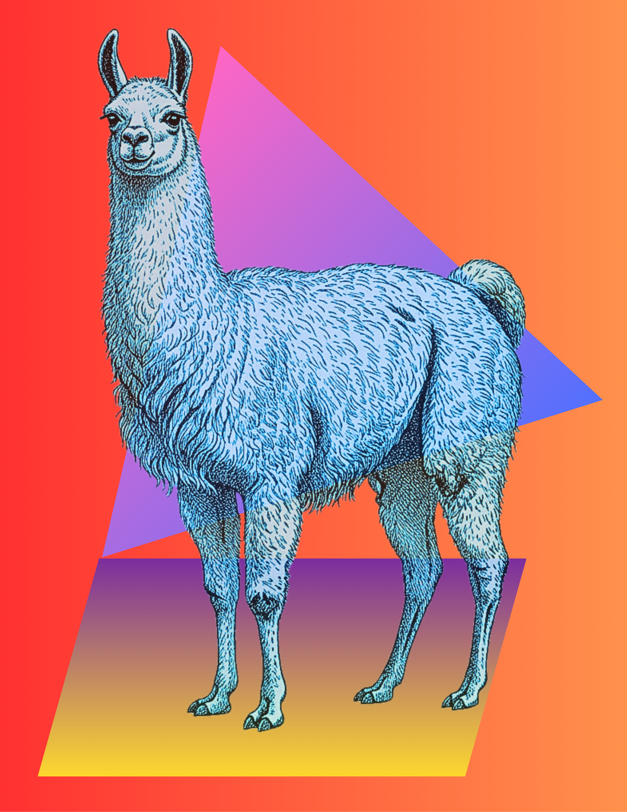
Life at NLlab

Morning Outdoor BBQ
"Good food and great friends make the perfect morning"
There's something special about starting the day with an outdoor BBQ in the fresh mountain air.
Ba Vi provided the perfect setting for our morning gathering, where the smell of grilled food mingles
with nature's crisp breeze. These shared meals create bonds that last long after the last bite,
reminding us that the simplest moments often bring the greatest joy.
2

Camp Fire
"Around the fire, stories come alive and friendships grow stronger"
There's something magical about gathering around a campfire under the starlit sky.
The warm glow brings everyone together, creating an intimate space where laughter echoes
and memories are made. These moments around the fire remind us that the best conversations
happen when we disconnect from the digital world and reconnect with each other.
4
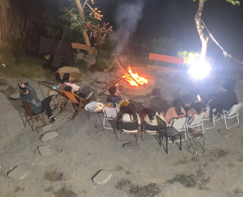
Hot pot in cold weather is the best
"Warmth shared is warmth doubled"
Nothing beats the comfort of hot pot when the mountain air turns chilly.
Gathering around a steaming pot of delicious broth, we found warmth not just from the food,
but from each other's company. The cold weather made us appreciate these cozy moments even more,
proving that sometimes the best comfort comes from simple pleasures shared with good friends.
6
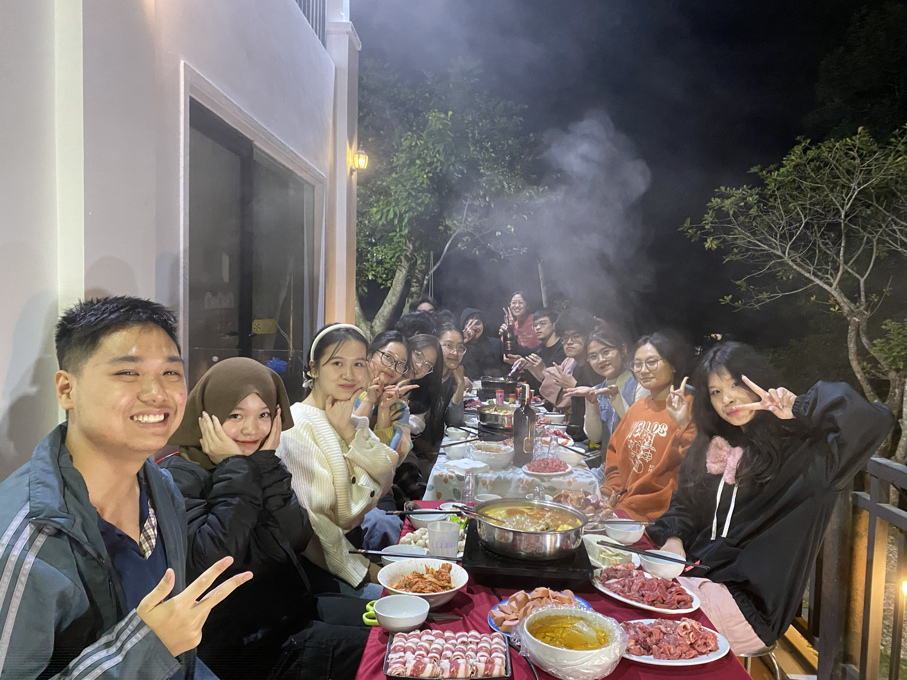
Graduation of the K65 class - the end of a journey
"Every ending is a new beginning in disguise"
Today marks the end of an incredible journey for the K65 class. Years of hard work, late nights,
and countless challenges have led to this moment of triumph. As we celebrate their graduation,
we're reminded that every ending opens the door to new possibilities. These graduates are ready
to take on the world, carrying with them the knowledge and memories from their time here.
8
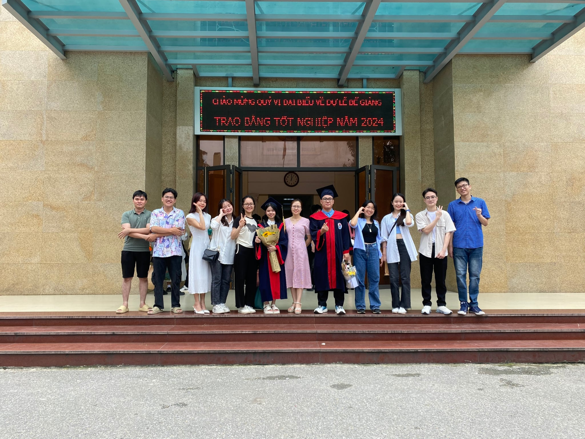
After thesis defense - K65 class
"Success is the result of courage, determination, and sleepless nights"
The relief and joy on their faces tell the whole story. After months of research, writing, and preparation,
the K65 class has successfully defended their theses. This moment represents the culmination of years
of academic pursuit and personal growth. Their hard work has paid off, and they can finally breathe
knowing they've achieved this significant milestone in their academic journey.
10
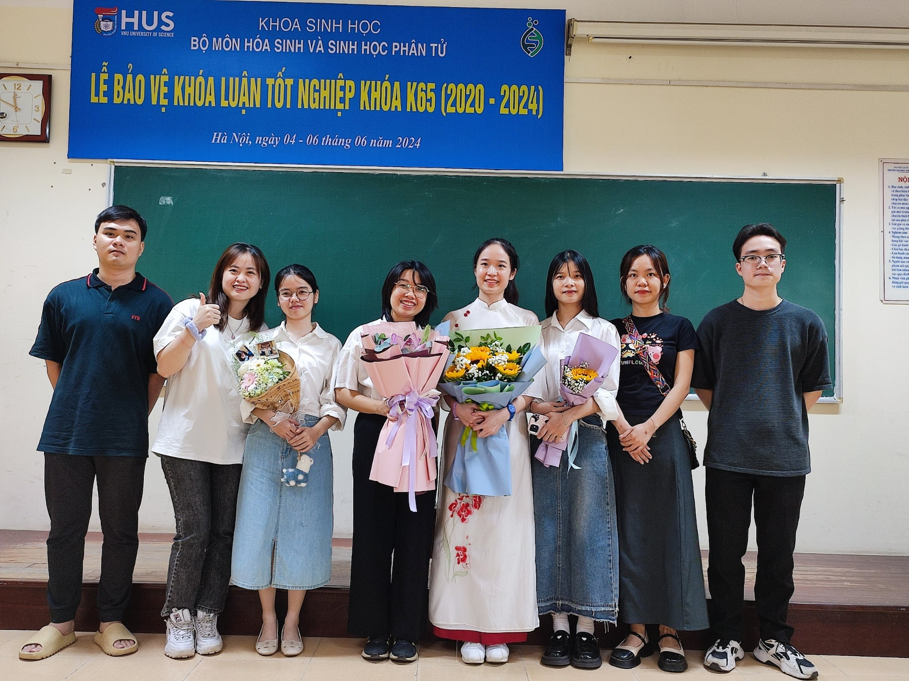
Dr. Nhung with the graduate students of class K65
"A great teacher's influence extends far beyond the classroom"
Dr. Nhung stands proudly with her graduating students, a testament to years of dedicated mentorship
and guidance. Her influence has shaped not just their academic knowledge, but their character and
approach to research. This photo captures a special bond between teacher and students - one that
will continue long after graduation as they carry her wisdom into their future endeavors.
12
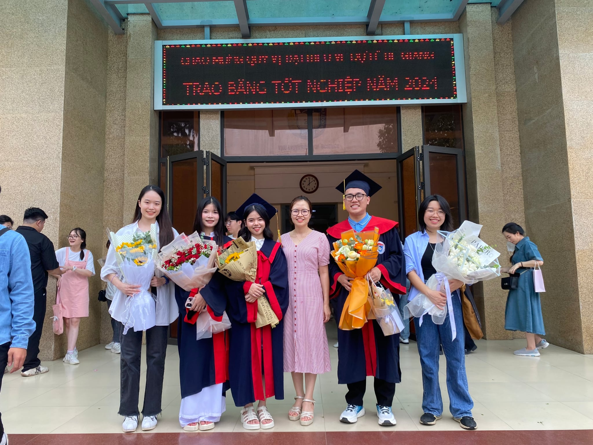
Flowers after thesis defense - celebrating our success
"Success is sweeter when shared with those who supported you"
Beautiful flowers mark the celebration of a successful thesis defense. These colorful blooms
represent the fruition of hard work and dedication, just like the academic achievements they
commemorate. The tradition of giving flowers after important milestones adds a touch of
beauty and recognition to these precious moments of triumph.
14
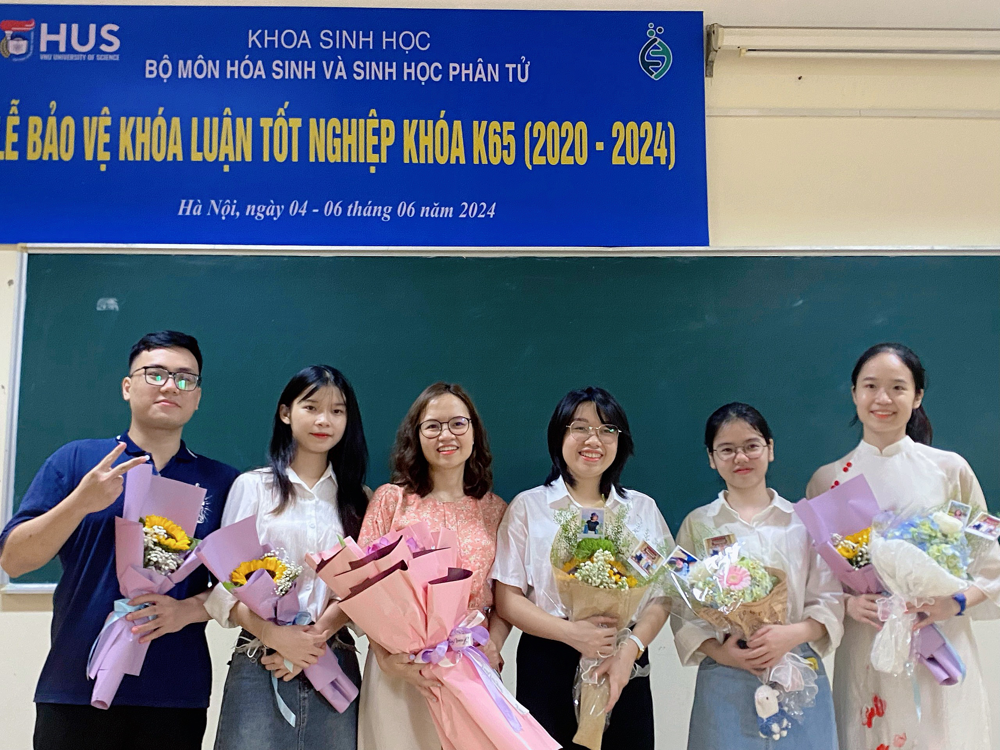
The junior and the senior
"Knowledge is best shared between generations"
This beautiful moment captures the connection between junior and senior students in our lab.
The passing of knowledge and experience from senior to junior members creates a continuous
cycle of learning and growth. These relationships form the foundation of our academic community,
where mentorship and friendship go hand in hand.
16
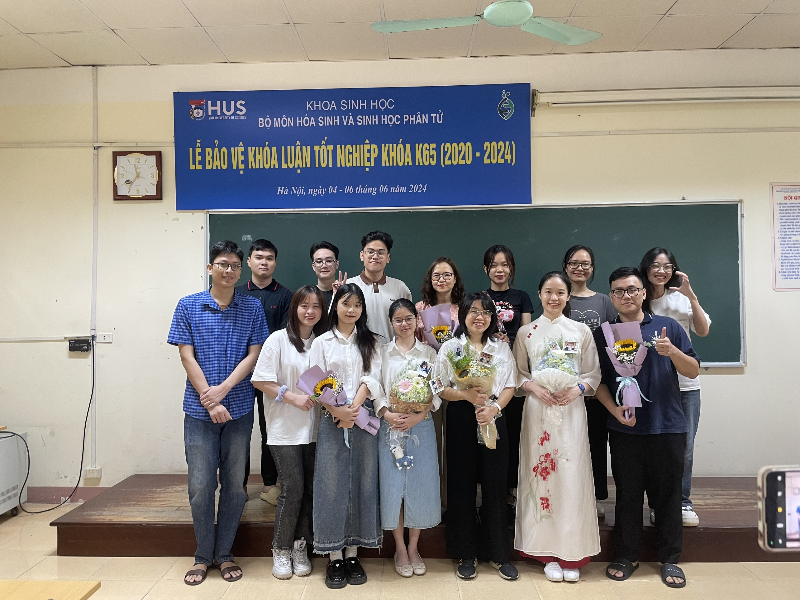
Best of luck to our new Bachelors
"The future belongs to those who believe in the beauty of their dreams"
As our new Bachelor's degree graduates step into the world, we wish them the very best
in their future endeavors. Their dedication and perseverance throughout their studies
have prepared them well for the challenges ahead. May they carry the knowledge and
experiences gained here as they embark on new adventures and pursue their dreams.
18
A meal together
"Food tastes better when shared with friends"
There's something special about sharing a meal together that goes beyond just satisfying hunger.
Around the dinner table, we share not only food but also stories, laughter, and memories.
These communal moments strengthen our bonds and create a sense of family within our academic
community. Good food and great company - the perfect recipe for happiness.
20
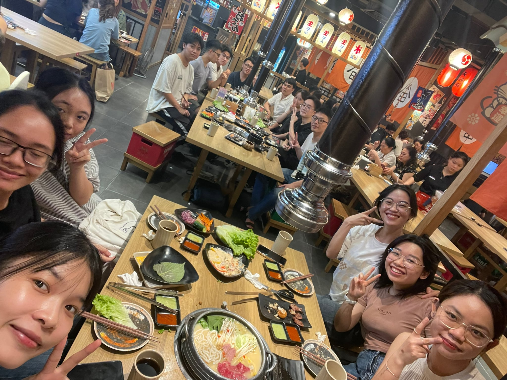
Teacher's Day - best wishes to all the teachers out there
"Teaching is the profession that creates all other professions"
On this special Teacher's Day, we celebrate and honor all the dedicated educators who shape minds
and inspire futures. Their patience, wisdom, and commitment create ripple effects that extend
far beyond the classroom. To every teacher who has made a difference in our lives - thank you
for your unwavering dedication to nurturing the next generation.
22
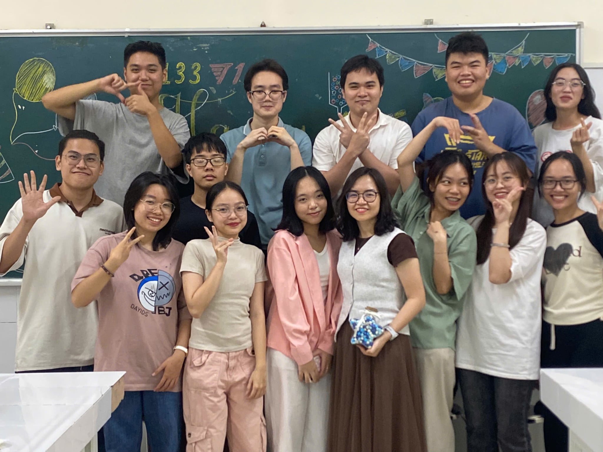
The small things that come daily make a huge impact
"Great things are done by a series of small things brought together"
It's often the small, everyday moments that create the most significant impact in our lives.
A kind word, a helping hand, a shared laugh - these seemingly minor interactions build the
foundation of meaningful relationships and lasting memories. In our lab family, it's these
daily gestures of care and support that make all the difference.
24
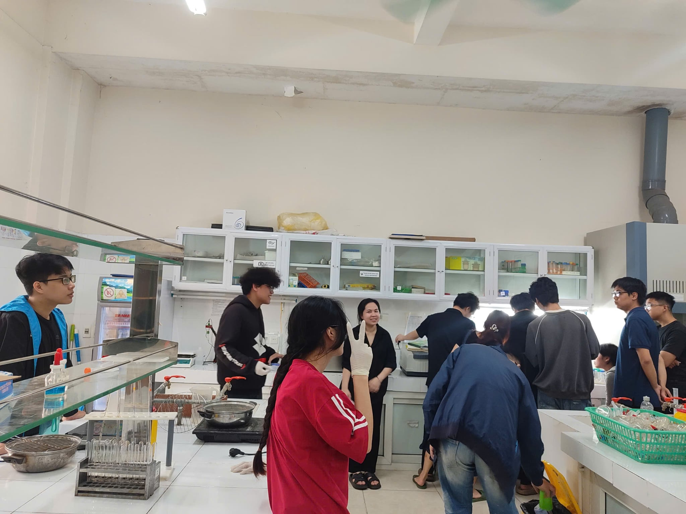
We were laughing, with no idea of the storm approaching
"Cherish the moments of joy, for they sustain us through difficult times"
In this carefree moment, laughter filled the lab as we enjoyed each other's company,
blissfully unaware of the challenges that lay ahead. Sometimes ignorance truly is bliss,
allowing us to fully embrace the present joy. These precious moments of happiness become
the memories we treasure most when facing life's inevitable storms.
26
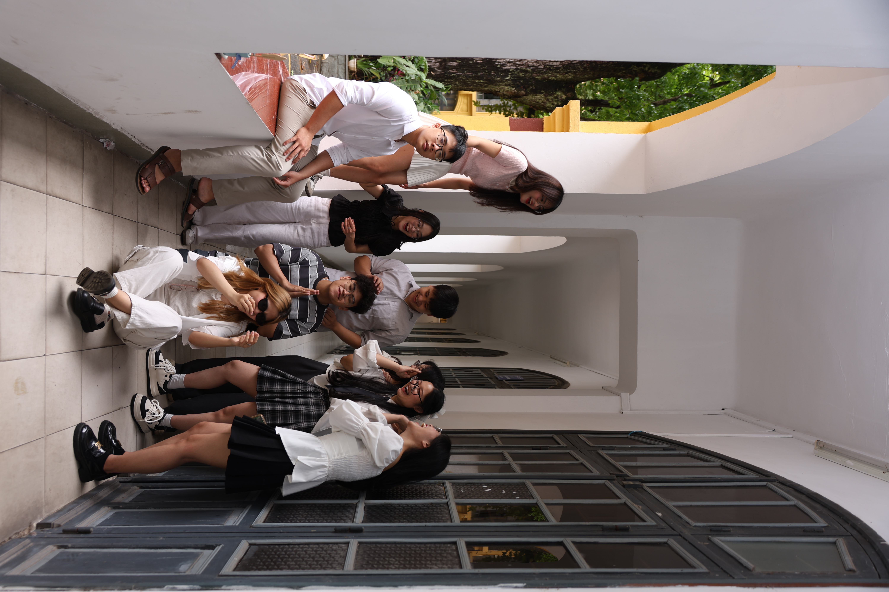
But first, let the sunlight in
"Keep your face always toward the sunshine, and shadows will fall behind you"
Before diving into the day's challenges, we pause to appreciate the beautiful sunlight
streaming through the windows. This golden light reminds us that even in the midst of
academic pressures and deadlines, there's always beauty to be found. Sometimes the best
preparation for what lies ahead is simply taking a moment to bask in nature's warmth.
28
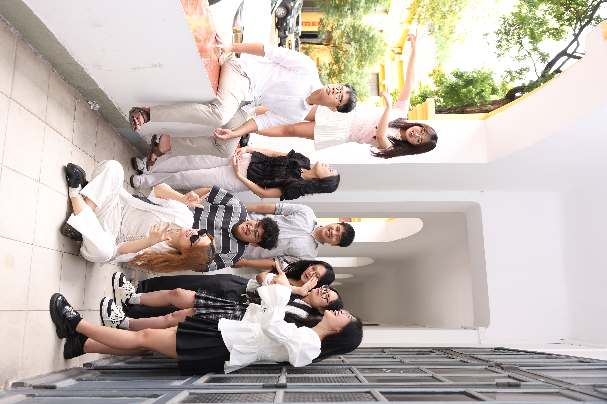
Back to being a student again
"The beautiful thing about learning is that nobody can take it away from you"
Sometimes life comes full circle, bringing us back to where we started with new perspectives
and deeper appreciation. Returning to student life offers a fresh opportunity to learn,
grow, and rediscover the joy of acquiring knowledge. This journey reminds us that learning
is a lifelong adventure, and every new beginning brings its own unique rewards.
30
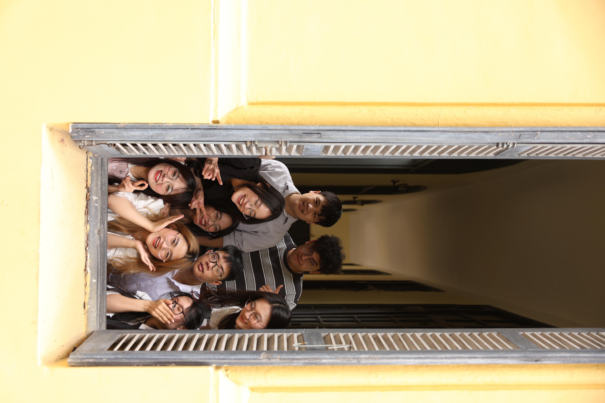
Another journey ends, but we're not crying
"Don't cry because it's over, smile because it happened"
As another chapter closes in our academic journey, we choose celebration over sorrow.
Yes, it's bittersweet to see this phase end, but we're filled with gratitude for the
experiences we've shared, the knowledge we've gained, and the friendships we've forged.
This isn't an ending - it's a transformation into something new and exciting.
32
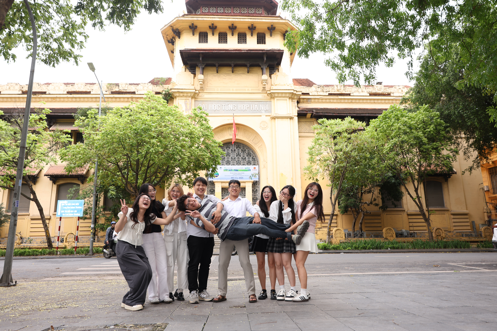
Hue Conference - Sharing Knowledge
"Knowledge shared is knowledge multiplied"
Academic conferences are where ideas come alive and connections are made. At the Hue Conference,
we had the opportunity to present our research, learn from others, and engage in meaningful
discussions that push the boundaries of knowledge. These events remind us that science
thrives on collaboration and the free exchange of ideas.
34

Conference Networking
"Great minds discuss ideas; average minds discuss events"
Beyond the presentations and papers, conferences offer invaluable networking opportunities.
Here we connect with fellow researchers, share experiences, and build relationships that
often lead to future collaborations. These interactions are the heartbeat of the academic
community, fostering innovation through human connection.
36

October 2022 Memories
"Time flies, but memories last forever"
October 2022 was a special time in our lab's journey. Despite the challenges the world
was facing, we found ways to stay connected, support each other, and continue our research.
This period taught us resilience and reminded us that even in difficult times,
we can create beautiful memories together.
38
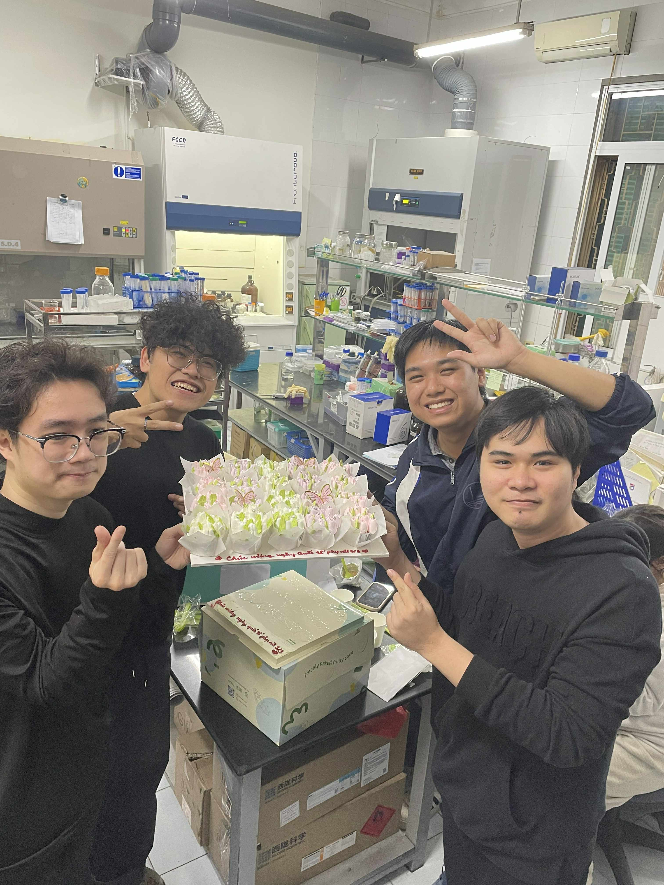
KHSV Conference 2022
"Excellence is never an accident; it is the result of preparation and dedication"
The KHSV Conference 2022 was a milestone event where our hard work and research culminated
in presentations that made us proud. This conference showcased the depth of knowledge
and expertise within our lab, demonstrating our commitment to advancing science and
contributing to the broader academic community.
40
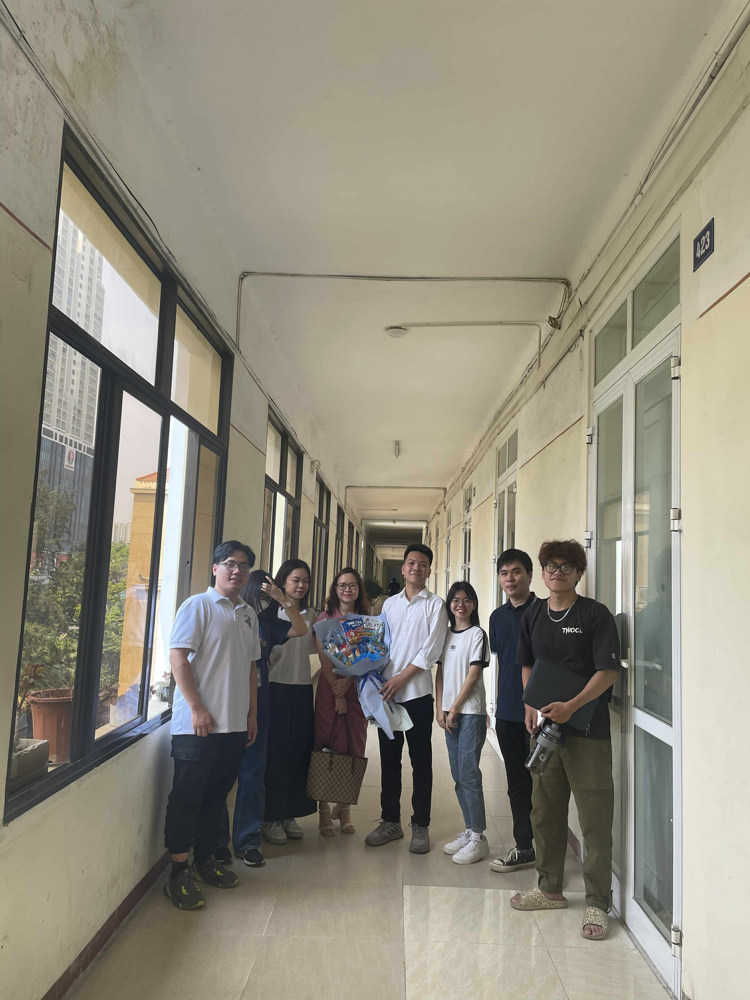
Research Presentation Success
"The expert in anything was once a beginner"
Standing before an audience to present research findings is both exhilarating and nerve-wracking.
Each presentation represents months or years of dedicated work, and sharing these discoveries
with the scientific community is one of the most rewarding aspects of academic life.
These moments validate our efforts and inspire us to pursue even greater achievements.
42
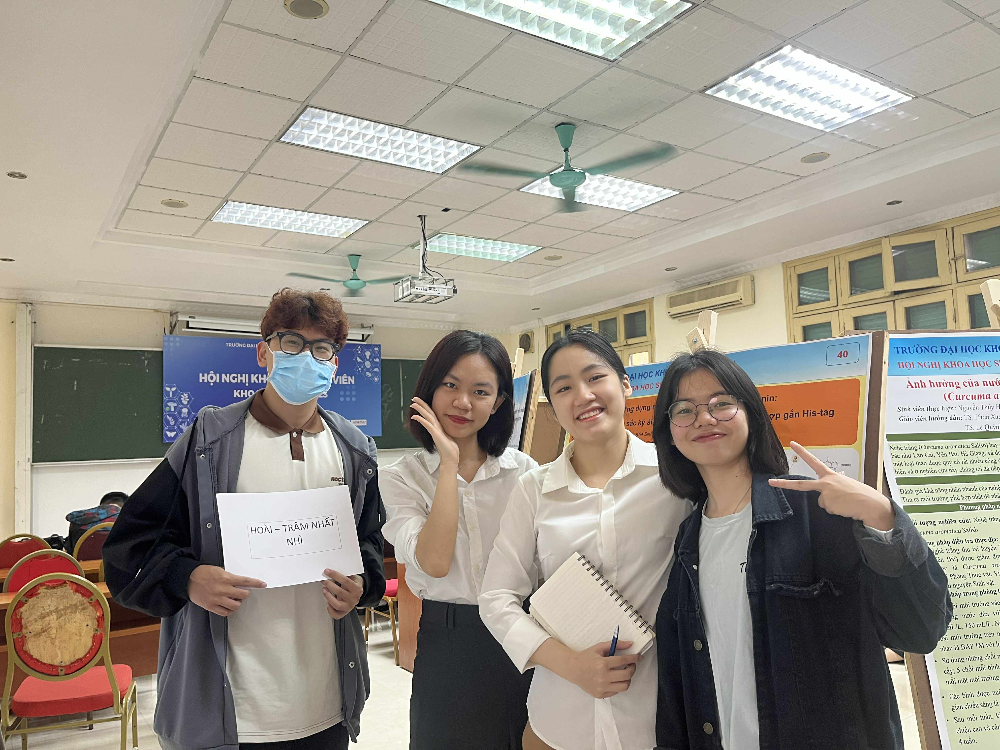
Lunar New Year 2023 Celebration
"New year, new beginnings, same amazing team"
The Lunar New Year brings hope, renewal, and the promise of good fortune ahead.
Celebrating this special occasion together as a lab family strengthens our bonds
and reminds us of the importance of tradition and togetherness. As we welcomed 2023,
we looked forward to new discoveries, achievements, and shared experiences.
44

Feast with Our Wonderful Teachers
"A teacher affects eternity; they can never tell where their influence stops"
Sharing a meal with our teachers goes beyond just food - it's about appreciation,
respect, and the special bond between mentors and students. These gatherings allow
us to express our gratitude for their guidance and to enjoy their company in a
more relaxed setting, creating memories that last long after graduation.
46
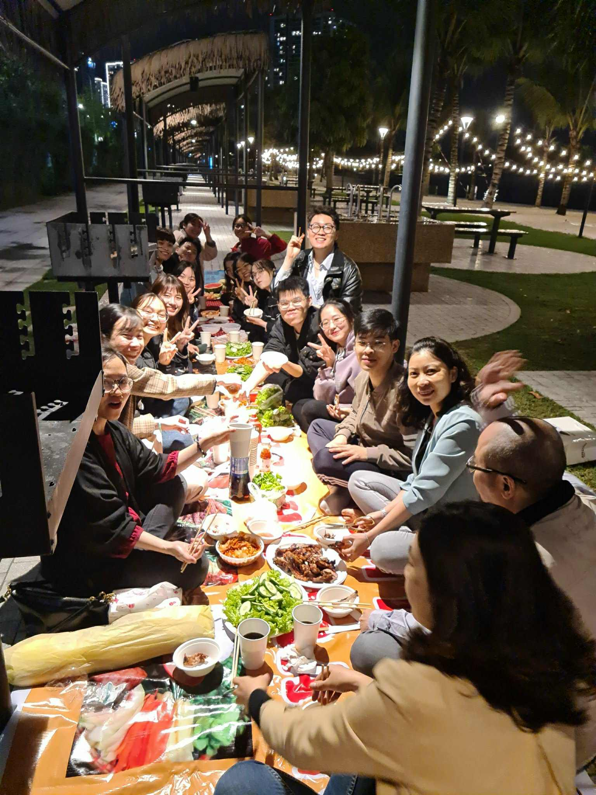
Gratitude and Good Times
"Gratitude makes sense of our past, brings peace for today, and creates a vision for tomorrow"
In moments like these, surrounded by the people who have shaped our academic journey,
we're filled with immense gratitude. Our teachers have not only imparted knowledge
but also wisdom, patience, and encouragement. These celebrations are our way of
saying thank you for believing in us and guiding us toward success.
48
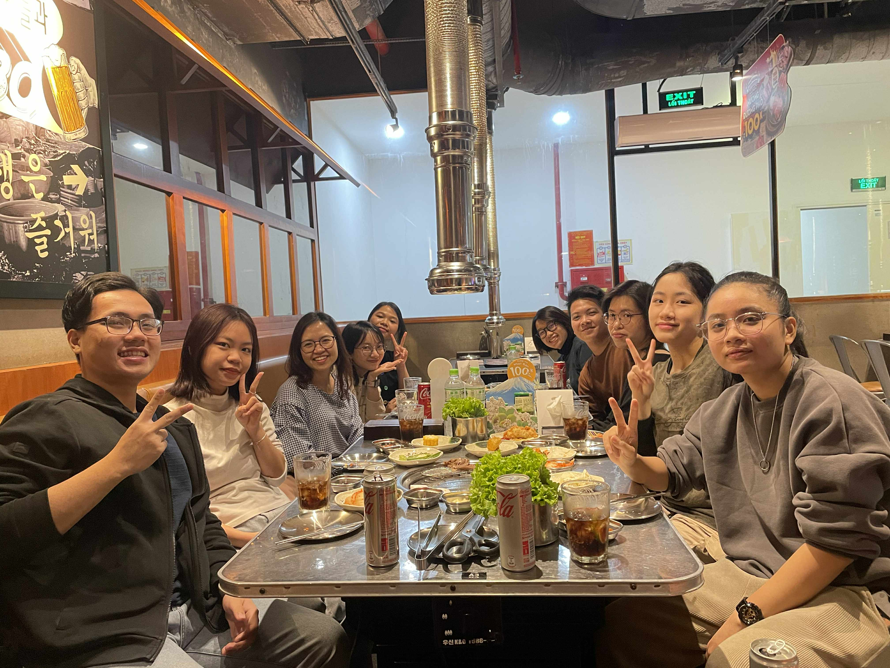
Other Special Moments
"Life is made up of small pleasures and beautiful moments"
Not every precious moment fits into a specific category, and that's perfectly fine.
Some of our most treasured memories come from unexpected situations, spontaneous
gatherings, or quiet moments of reflection. These "other" moments are just as
important in painting the complete picture of our lab's story.
50
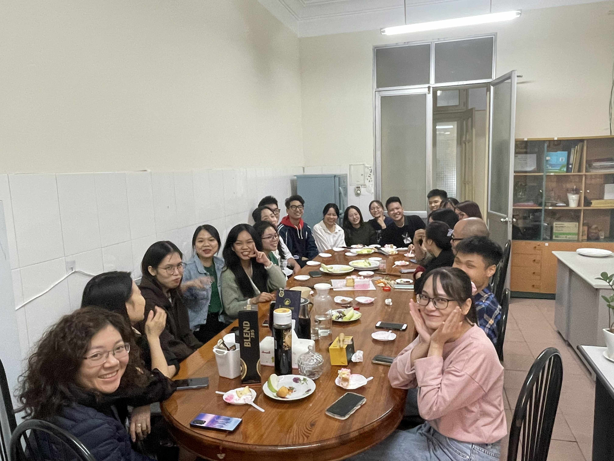
Some Word
Reflecting on my time here, it's clear that the heart of this lab has always been its people. I feel fortunate to have been part of such a brilliant and supportive group, and I'll always be grateful for the memories we've shared and the knowledge we've built together. My hope is that you, the reader, will find your own journey here just as rewarding.
52
Thank You ~ Editor : Duc Luu